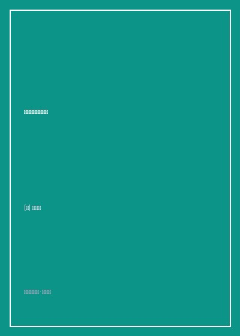

《网络是怎样连接的》

总体观点
《网络是怎样连接的》展现了硬核计算机网络知识教学的最高境界。户根勤摒弃了传统教材从OSI七层模型枯燥自底向上背诵协议的教条方式，而是采用沉浸式“探索追踪”视角，带领读者化身一颗数据包，亲历从浏览器敲下Enter键开始的一微秒世界。
全书以“物理世界与逻辑协议的无缝互译”为核心脉络：从浏览器生成HTTP报文、DNS域名解析，到操作系统协议栈封装TCP/IP头部，再通过网卡将电信号注入双绞线、在局域网交换机与互联网路由器之间穿山越岭，最终穿透防火墙抵达Web服务器。它不仅把复杂的网络原理降维解构，更展现了现代人类互联网基础设施协同运作的惊人工程美感。
核心观点
-
1. 从输入网址到生成HTTP请求消息的解析魔法
浏览器并不直接与网络电缆通信；它先将用户输入的URL拆解为协议、域名与路径，生成格式严格的HTTP请求报文，并调用操作系统解析器向DNS服务器查询IP地址。
输入网址后，Socket库的gethostbyname函数向最近的DNS服务器发出UDP查询请求，通过根域名服务器层层下发获得服务器IP。 -
2. TCP三次握手：在不可靠世界建立绝对可靠连接
TCP协议通过序列号、确认应答号与窗口控制机制，保证数据包即使遭遇丢包、乱序也能自动重传并按序组装，为上层应用提供平稳无差错的数据流通道。
客户端发送SYN包，服务端回复SYN+ACK，客户端再次回复ACK，三次握手确立双方收发能力正常，随即进入数据传输阶段。 -
3. IP协议与路由表：数据包在互联网海洋中的寻径智慧
IP负责跨网络寻址；路由器根据自身动态更新的路由表，检查每个数据包的目标IP地址并匹配最佳下一跳（Gateway），将数据包一步步推向目标主机。
路由器收到数据包后剥去MAC头，通过比对路由表子网掩码计算出最长匹配项，重新封装下一跳MAC地址并从指定物理端口转发。 -
4. 交换机与MAC地址表：局域网内的精准分流
局域网交换机根据数据包中的目标MAC地址与自身自学习建立的MAC地址表，将信号精准定向转发到对应端口，彻底告别了早期集线器全网广播的信道拥堵。
交换机只要收到一次某个接口的数据包，就自动记录该源MAC地址与物理端口的对应关系，下次发往该地址的数据包直接单播送达。 -
5. 光缆与接入网：光电信号在物理维度的穿山越岭
数据包最终通过ADSL调制解调器或光猫转化为高频电磁波或光脉冲，在海底光缆与骨干网光纤中以接近三分之二光速穿梭半个地球。
光纤利用全反射原理让激光脉冲在二氧化硅玻璃纤维芯层中无损长途传输，经光放大器补偿衰减后跨越大洋送达彼岸数据中心。
全书思维导图 · 知识脉络树
全书结构
-
第1章：生成HTTP请求消息（浏览器中发生了什么）
解析输入URL含义、生成HTTP请求报文、DNS域名查询机制以及Socket库如何向操作系统协议栈发起委托委托委托。
图解HTTP GET请求行、请求头键值对格式，以及DNS服务器树状层级缓存机制如何将查询耗时控制在数十毫秒内。 -
第2章：用电信号传输TCP/IP数据（协议栈与网卡）
解析操作系统内部TCP与UDP协议栈实现：创建套接字、连接建立、数据拆分与序列号ACK应答，以及网卡驱动如何将数字信号转化为物理网线中的电信号。
拆解TCP包头结构中的端口号、滑动窗口大小控制，展示发送缓冲区如何根据MSS大小切片数据包。 -
第3章：从网线到网络设备（集线器、交换机与路由器）
局域网内部中继设备运作原理：双绞线差分电平抗干扰机制、集线器广播与交换机MAC地址自学习，路由器路由表检索与包转发流程。
对比二层交换机（基于MAC地址转发）与三层路由器（基于IP地址转发）的根本分工差异，展示两者如何协同完成局域网与广域网互通。 -
第4章：通过接入网进入互联网（宽带接入与网络运营商）
家用宽带接入技术（ADSL/FTTH光纤入户）、PPPoE拨号认证机制、网络服务商（ISP）POP接入点与互联网交换中心（IXP）骨干网直联架构。
展示家庭路由器如何通过NAT（网络地址转换）将内部局域网私有IP动态映射为电信运营商分配的公网IP地址。 -
第5章至第6章：服务器端的局域网与响应消息返回
防火墙包过滤规则拦截恶意请求、负载均衡器请求分发，Web服务器操作系统协议栈接收入队、解析HTTP请求并返回页面数据，全链路闭环完成。
服务器网卡接收到电信号后触发硬件中断，驱动程序从Ring Buffer拉取数据包提交内核协议栈，最终唤醒Nginx工作进程完成页面渲染返回。